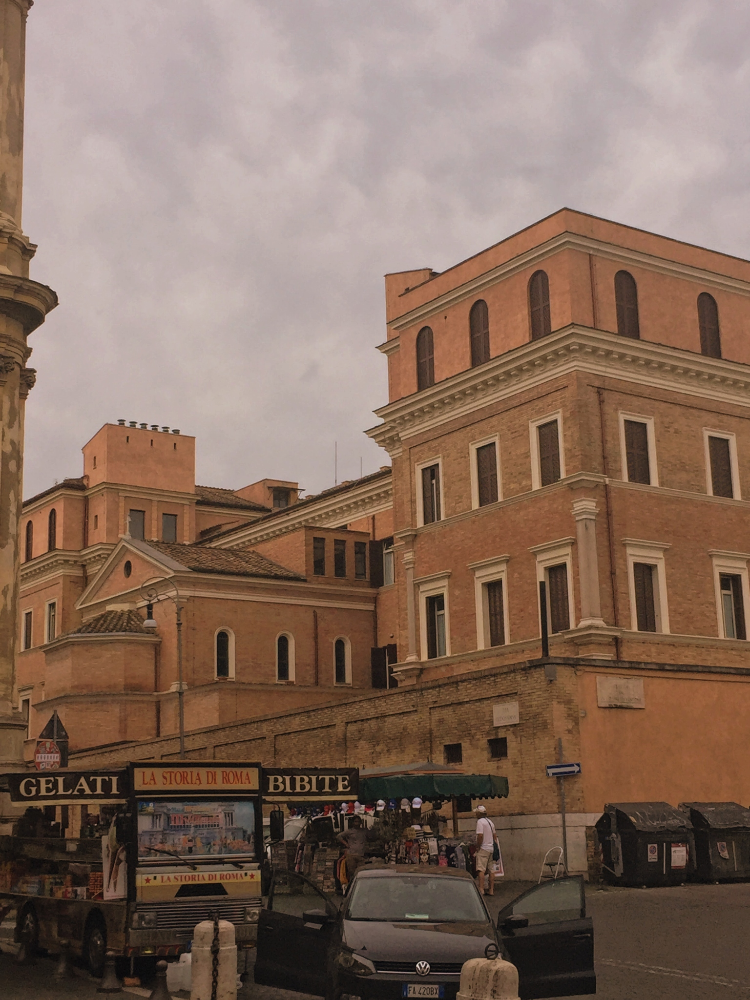
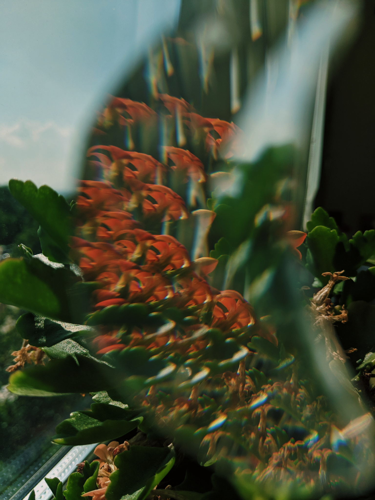
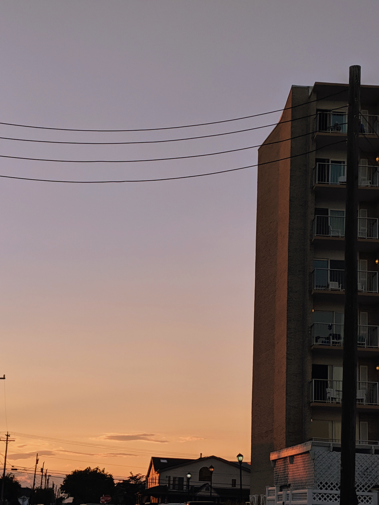
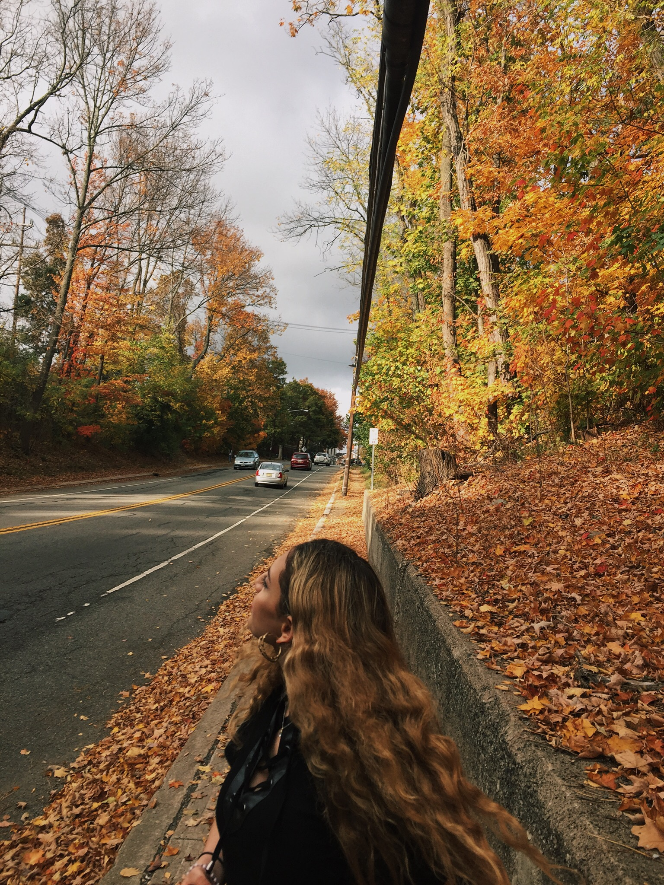

This website is dedicated to showcasing my art and creative projects. I enjoy taking photographs of symmetry, meaning actual symmetry, but also the harmony of structures in anything from nature to cities as well. The balance in these still moments is what inspires me to click the capture button. Most of my pictures are taken in New York City, New Jersey, Washington D.C., and Italy.
   